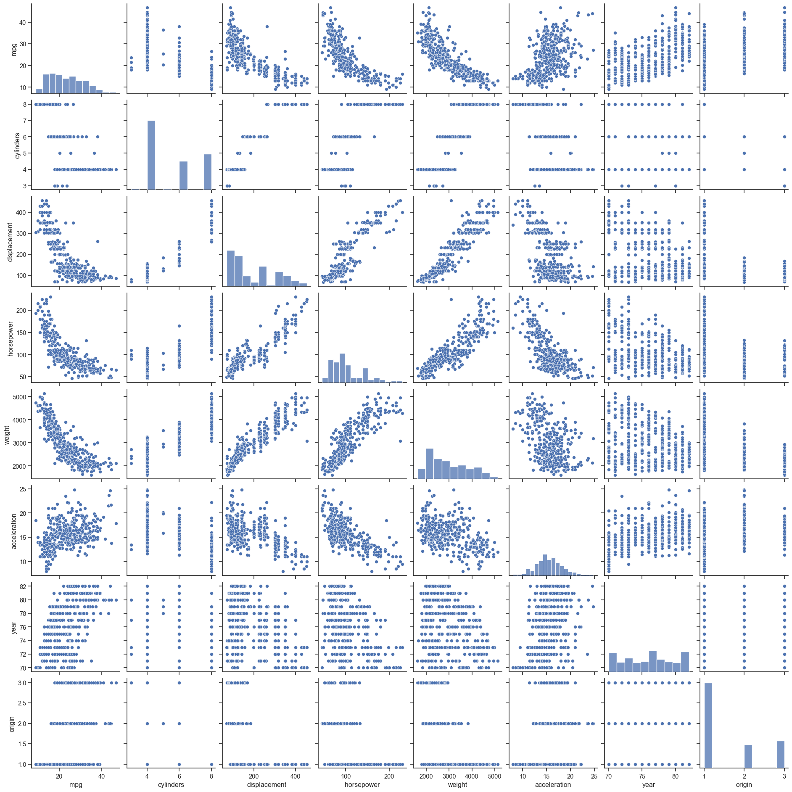
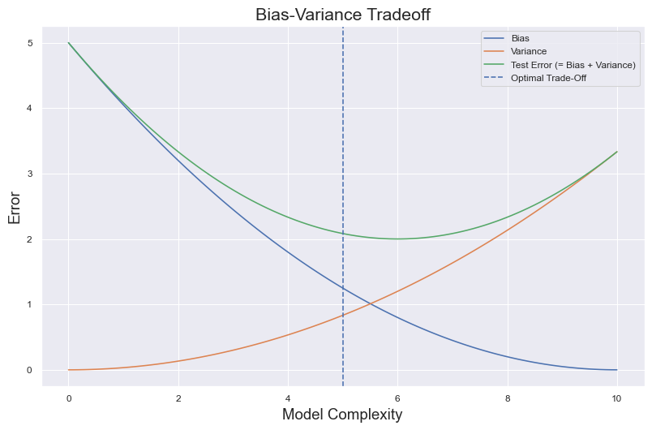

There must be some way to quantify how well our predictions match the observed data. The extent to which the predicted response value for a given observation is close to the true response for said observation. Within regressions, the most commonly used measure is the mean squared error (MSE), given by \(MSE = \frac{1}{n}\sum_{i = 1}^{n}(y_{i} - \hat{f}(x_{i}))^{2}\) where \(\hat{f}(x_{i})\) is the prediction that \(\hat{f}\) gives for the \(i\)th observation. The MSE will be small if the predicted responses are very close to the true response, and will be large if for some of the observations, the predicted and true responses differ substantially.
The goal, roughly speaking, is to obtain the lowest test MSE. There is no garauntee that the method with the lowest training MSE will also produce the lowest test MSE. The problem is that many statistical methods specifically estimate coefficients so as to minimize the training set MSE. The training MSE can be quite small, but the test MSE is often much larger.
Show the code
```{python}import matplotlib.pyplot as pltimport numpy as npimport pandas as pdimport polars as plimport seaborn as snspd.options.display.precision =4auto_data = pd.read_csv("./data/ALL CSV FILES - 2nd Edition/Auto.csv", na_values=["?"])autos = auto_data.dropna().reset_index().drop(columns="index")quant_vals = ["mpg","cylinders","displacement","horsepower","weight","acceleration",]ranges = [np.max(autos[column]) for column in quant_vals]means = [np.mean(autos[column]) for column in quant_vals]std = [np.std(autos[column]) for column in quant_vals]maxes = [np.max(autos[column]) for column in quant_vals]mins = [np.min(autos[column]) for column in quant_vals]d = {"Max": maxes,"Min": mins,"Range": ranges,"Mean": means,"Standard Deviation": std,}measuredf = pd.DataFrame(d, index=quant_vals)sns.set_theme(style="ticks")sns.pairplot(autos)```

Note
Observations made:
Number of cylinders increases, the weight increases, the rate of acceleration increases, horsepower increases, displacement increases, and efficiency (mpg) decreases.
As displacement increases, horsepower increases & efficiency decreases.
As horsepower increases, acceleration decreases, efficiency (mpg) decreases.
As weight increases, efficiency decreases.
As model year increases, efficiency increases.
Recall we arent interested in whether \(\hat{f}(x_{o}) ≈ y_{i}\); the goal, instead, is to know whether \(\hat{f}(x_{0})\) is approximately equaol to \(y_{0}\), where \((x_{0}, y_{0})\) is a previously unseen test observation not used to train the statistical learning method. Choose the method that gives the lowest test MSE, as opposed to the lowest training MSE. Aka, if you have a large number of test observations, you could compute: \(\text{Avg}(y_{0} - \hat{f}(x_{0}))^{2}\), the average squared prediction error for these test observations \((x_{0}, y_{0})\).
Bias/Variance Tradeoff
Bias
Error between average model prediction and ground truth aka how far your average is from the truth.
The bias of the estimated function tells us the capacity of the underlying model to predict the values \(\textit{bias} = \mathbin{E}[f\prime(x)] - f(x)\)
Variance
Formally variance, \(var(x)\) - or its square root, standard deviation - measures how densely packed around the Expected Value points in the distribution are: meaning, the spread of the point distribution. Its formally defined as: \[
var = \begin{cases}
\sum^{n}_{i=1} \enspace(x_i - \mu)^2 ρ(x_i) &\rightarrow \text{for a discrete n point distribution} \\
\int^{\infty}_{x=-\infty} (x - \mu)^2 ρ(x)dx &\rightarrow \text{for a continuous distribution} \\
\end{cases}
\]
Average variability in the model prediction for the given dataset
The variance of the estimated function tells you how much the function can adjust to the change in the dataset \(\textit{variance} = \mathbin{E}[(f^\prime(x) - \mathbin{E}[f^\prime(x)])^2]\)
High Bias
Overly simplified model
Under-fitting
High error on both test and train data
High Variance
Overly complex model
Over-fitting
Low error on train data, high error on test data
Will model the noise in the input
#
Error Category
Bias
Variance
Train Error
Test Error
1
Overfit
Low
High
Small
Large
2
Underfit
High
Low
Large
Large
Show the code
```{python}import matplotlib.pyplot as pltimport numpy as npimport seaborn as sns# generate some values to showcase model complexitymodel_complexity = np.linspace(0, 10, 100)# defining functions for bias, variance and test errorbias_sq = (10- model_complexity) **2/20var = model_complexity**2/30# test error is bias and variance togethertest_error = bias_sq + varsns.set_theme("paper")# sns.set_palette(palette='flare')plt.figure(figsize=(10, 6))# plt.plot(model_complexity, bias_sq, label = r"Bias", color = "blue")plt.plot(model_complexity, bias_sq, label="Bias")# plt.plot(model_complexity, var, label = 'Variance', color = 'red')plt.plot(model_complexity, var, label="Variance")# plt.plot(model_complexity, test_error, label = 'Test Error (= Bias + Variance)', color = 'black')plt.plot(model_complexity, test_error, label="Test Error (= Bias + Variance)")plt.xlabel("Model Complexity", fontsize=14)plt.ylabel("Error", fontsize=14)plt.title("Bias-Variance Tradeoff", fontsize=16)# plt.axvline(x = 5, color = 'gray', linestyle = '--', label = 'Optimal Trade-Off')plt.axvline(x=5, linestyle="--", label="Optimal Trade-Off")plt.legend()plt.grid(True)plt.show()```

The bias-variance tradeoff is a fundamental concept in ML that helps us understand the tradeoff between two types of errors that a model can make: bias and variance. Its crucial to strike a balance between these two types of errors to create a model that generalizes well to new, unseen data.
Bias refers to the error due to overly simplistic assumptions in the learning algorithm. A high bias model may underfit the data, meaning it fails to capture the underlying patterns and relationships in the data, leading to poor performance on both the training and test sets.
Variance refers to the error due to the model’s sensitivity to small fluctuations in the training data. A high variance model might overfit the data, meaning it fits the training data very well but fails to generalize to new data points, resulting in poor performance on the test set.
Tradeoff Explanation with Example:
Consider a simple example of fitting a polynomial to a set of data points. Imagine you have a set of points that form a curve on a 2D plane. Your goal is to find a polynomial equation that fits these points:
High Bias, Low Variance: Suppose you decide to fit a linear equation to the data points. This is a high bias model because it makes a simplistic assumption about the underlying relationship. As a result, the fitted line might not capture the curve’s nuances, leading to a bias in the predictions. However, this simple model is less sensitive to variations in the training data, so it might perform similarly on both the training and test sets.
Low Bias, High Variance: Now consider fitting a high-degree polynomial (ex: 10th-degree polynomial) to the data points. This is a low bias model because it has the flexibility to closely follow the data points, even capturing their intricate details. However, this mode is more sensitive to the noise and fluctuations in the training data, resulting in high varince. Its likely to fit the training data extremely well but may not generalize to new data points, leading to poor performance on the test set.
In reality the tradeoff isnt so simple. You wont see such clean depictions of bias vs variance to pick an optimal point. Here is a more realistic plot:
```{python}from calendar import monthrangeimport graphviz as gfimport pandas as pdimport polars as pl# --import tensorflow as tffrom dateutil.relativedelta import relativedeltafrom sklearn import tree# --from sklearn.datasets import load_digitsfrom sklearn.ensemble import ( AdaBoostClassifier, RandomForestClassifier, RandomForestRegressor,)from sklearn.linear_model import ElasticNet, Lasso, Ridgefrom sklearn.metrics import RocCurveDisplay, auc, roc_curvefrom sklearn.neural_network import MLPClassifierfrom statsmodels.distributions.empirical_distribution import ECDF# testing_sample = pl.from_pandas(_testing_sample)# import pyreadr as prfrom statsmodels.formula.api import olsfrom statsmodels.graphics.tsaplots import plot_acffrom tensorflow import kerasfrom xgboost import XGBClassifierplt.style.use("seaborn-v0_8")# plt.rcParams["patch.facecolor"] = "white"plt.rcParams["figure.figsize"] =15, 7digits = load_digits()X = digits.data /16.0-0.5# normalizes dataset into -0.5 to 0.5 rangey = digits.targetX_train, X_test, y_train, y_test = train_test_split( X, y, test_size=0.15, random_state=123, stratify=y)clf = MLPClassifier( hidden_layer_sizes=(10,), activation="relu", learning_rate_init=0.01, random_state=123, solver="adam", max_iter=500,)# Now you can convert the pandas dataframe to other formats if needed# For example, to polars:```
Show the code
```{python}# Normal approximation Interval based on test setimport scipy.stats as stconfidence =0.95z_value = st.norm.ppf((1+ confidence) /2.0)print(z_value)```
```{python}# _data['R1M_Usd_C'] = _data.groupby('date')['R1M_Usd'].transform(lambda x: (x > x.median()))# _data['R12M_Usd_C'] = _data.groupby('date')['R12M_Usd'].transform(lambda x: (x > x.median()))# This creates dummy variables indicated whether the return of a given stock was higher than the median cross-section return. This will be used as the Y variable in categorical prediction problems afterwards.. i.e. we'll try to predict which stocks will perform relatively better.```
Show the code
```{python}# fpr, tpr, thresholds = roc_curve()# Module for AUC computation```